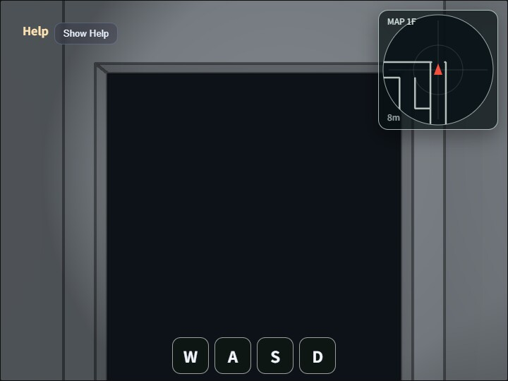

maze
English | 日本語

maze は、first-person移動、衝突判定、spot light、Compute Effect、レーダー表示を備え、動的に生成した迷路を歩き回るウォークスルー用サンプルです。
main.jsは固定seedの疑似乱数から15×15 cellのDFS迷路を生成し、Primitive.cuboid()で床、壁、天井、部屋入口のside jamb、上部lintelを組み立てます。固定のModelAssetは読み込まず、生成した形状をWebgAppで描画します。
迷路は1階建てです。通路グリッド幅は2.5m、壁厚と天井厚は0.1m、天井下面は床面から3.0m、歩行者のbaseはy = 0.0、EyeRig.eyeHeight = 1.6mです。壁厚を通路幅に含めるため、有効通路幅は概ね2.4mです。
床色は通常通路、部屋、開始エリア、ゴールエリアで分けています。迷路生成後には複数箇所へ 2 x 2 cell 以上の room を上書きし、room の内部壁を取り除いたうえで、幅 2.0m、高さ 2.4m の入口を作ります。入口の上部 lintel は高さ 0.55m とし、天井下面 3.0m との間へ 0.05m の余白を残します。
レーダーは walk_around と同じ heading-up 方式で、現在位置近くの collision segment を右上の 2D canvas へ重ね表示します。door の上部 lintel はプレイヤー円柱の高さ範囲と重ならないため、衝突対象にもレーダー表示にも含まれません。door の左右 jamb は歩行者に対する衝突対象として残ります。
迷路生成、部屋、扉、衝突判定、レーダーの詳しい規則はmaze_spec.mdに記載しています。
実行方法
- 実行ファイルは
./maze.htmlです - WebGPU 対応ブラウザで開きます
- PC ではドラッグとキーボード、スマートフォンではドラッグと画面下の
W/A/S/Dbutton を使います - Canvas の double tap / double click、または
/key で command palette を開きます
使用している webg 機能
WebgApp: 初期化、描画ループ、HelpPanel、HUD、FrameTimerShape/Primitive.cuboid(): 床、壁、天井、入口の side jamb と lintel を procedural に組み立てるEyeRig:first-personmode の移動、視線回転、run 操作を扱うCommandPalette: Compute Effect と spot light の設定を小画面を覆い続けない palette にまとめるComputeEffectPipeline: SSAO、Shadow、SSR、Toon、DoF、Bloom、Edge を設定に応じて描画へ適用するFullscreenPass: compute effect の最終結果を canvas へコピーするCollisionWorld/WalkCollisionBuilder: procedural に生成した wall cuboid から衝突線分を抽出し、円柱プレイヤーの移動を解決する- DOM
canvas: 現在位置周辺の衝突線分を heading-up レーダーとして重ね表示する
操作方法
- 左右Drag: 進行方向と視線を左右へ回転する
- 上下Drag: 操作中だけ上または下を見る。Drag終了時に pitch は水平へ戻る
W/S: 前進 / 後進A/D: 左旋回 / 右旋回Shift: 移動を速くする5/6: Toon の段階数を 2 から 8 の範囲で減らす / 増やす0: 初期視点へ戻す。位置は[-2.5600, 0.0, 6.0572]、視点高さは1.60m、方位角は-29.91°K: screenshot を保存する- Canvas の double tap / double click、または
/: command palette を開閉する - Palette 1 page: SSAO、Shadow、SSR、Toon、DoF、Bloom、Edge、Ambient Only、Ambient Strength、Toon Levels、Edge Thickness、Edge Blend を設定する
- Palette 2 page: Spot FOV / Inner / Outer、視点 reset、screenshot を操作する
確認ポイント
- 起動直後と
0による reset 後に、maze2と同じrow、colとcell内相対位置に対応する[-2.5600, 0.0, 6.0572]、方位角-29.91°のfirst-person視点へ戻ること - 左右Dragで進行方向と視線が一緒に回転し、上下Dragでは操作中だけ上または下を見て、Drag終了時に水平へ戻ること
W/A/S/Dで、orbit ではなく first-person 視点の移動として操作できること- 壁や room door の side jamb で移動が止まり、door 開口部だけを通過できること
- 右上の
MAPで、視点前方が上向きになり、近くの壁や柱の衝突線分が白い線として表示されること - room、start、goal、通常通路で floor color が異なること
- 固定 seed のため、再読み込み後も同じ迷路形状になること
- 初期状態では Edge が有効、Toon が無効で表示され、palette から各 effect を個別に切り替えられること
- HelpPanel と HUD に、現在位置、視線角度、room 数、GPU Compute / GPU Render / JS Load が出ること
ファイル
maze.html: 実行ページmain.js: 迷路生成、first-person 移動、Compute Effect、レーダーの実装CollisionWorld.js: XZ 平面の円柱プレイヤー用 collision worldWalkCollisionBuilder.js: wall shape から collision segment を抽出する helpermaze_spec.md: 迷路生成、部屋、扉、衝突判定、レーダーの詳細仕様README.md: 日本語の説明README.en.md: 英語の説明